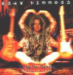

| Artist: | Andy Timmons |
| Title: | That Was Then This Is Now |
| Label: | Favored Nations FN2200 |
| Length(s): | 68 minutes |
| Year(s) of release: | 2002 |
| Month of review: | [05/2002] |
| 1) | Super '70s | 4.21 |
| 2) | Pink Champagne Sparkle | 3.42 |
| 3) | Falling Down | 4.22 |
| 4) | Beautiful, Strange | 3.52 |
| 5) | Turn Away | 4.14 |
| 6) | I Remember Stevie | 5.18 |
| 7) | Cry For You | 6.56 |
| 8) | Farmer Sez | 1.47 |
| 9) | Electric Gypsy | 4.34 |
| 10) | It's Getting Better | 4.44 |
| 11) | That Was Then, This Is Now | 3.43 |
| 12) | Groove Or Die | 2.26 |
| 13) | A Night To Remember | 5.32 |
| 14) | Carpe Diem | 4.00 |
| 15) | Donna Lee (live) | 3.05 |
| 16) | Slips Away | 4.48 |
The next few tracks are usually not as likable, coming from his 1994 release. Turn Away is quite faceless, while I Remember Stevie is a bit monotone in its drumming. The blues underground and the reference to Stevie Ray Vaughn. Cry For You is the best among the tracks from the 1994 release. The opening is slow, but carries a strong emotion with lots of high long chords. After a while the rock becomes more apparent and the ending is quite full of sound with lots of things happening.
After the forgettable country tune Farmer Sex, Electric Gypsy is a bluesy tune with rock injections. Sometimes quite hefty, melodically okay. It's Getting Better is not making it better though: ratehr boring this one, although we finally get a bit of keyboards appearing.
The title track is the first one from the 1997 album. Very pacey and energetic with a big number of notes played in a small space of time. Played with precision. Groove Or Die is even pacier and gets to be positively Malmsteenian with its baroque feel. A Night To Remember opens with atmospherics (hey?) followed by a long solo, one of the better ones on the whole album. Carpe Diem is back to the first album and reeks too much of Bryan Adams.
Swing we find on Donna Lee, a live track written by Charlie Parker. The live feel is strongly apparent. Slips Away is a tribute to George Harrison. Strangely enough the song comes from the 1997 album. This is the only vocal track on the album and a strong song to begin with. It is only one of the rare acoustic moments on the album and has some Beatles influences as well, without being too apparent. Very nice.